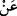
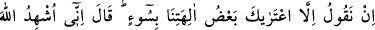
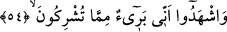
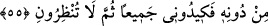

Müftî Sa‘dî der ki: “ __WORD__ ” harfinin “sâdece ona verdiği sözden dolayı idi.” (et-Tevbe,
9/114) âyetinde olduğu gibi sebebiyet mânâsı ifade ettiği de söylenir. O zaman âyet:
“Senin bu delilden yoksun sözün sebebiyle ilahlarımıza ibadeti terk edecek değiliz!”
şeklinde olur.
Bizi davet ettiğin tevhid inancı ve tanrılara kulluğu bırakma hususunda “sana
inanacak da değiliz.” Bu söz, Hûd (a.s.)’ın dâvetine icâbet etmeyeceklerini ve onu
tasdik etmeyeceklerini kesin bir dille göstermektedir.
54. Biz: “Tanrılarımızdan biri seni fena çarpmış demekten başka bir söz
bulamıyoruz.” (Hûd) dedi ki: “Ben Allah’ı şahid tutuyorum, siz de şahid olun ki ben
sizin ortak koştuğunuz şeylerden uzağım.”
“Biz: “Tanrılarımızdan biri seni fena çarpmış” kendileri hakkında ileri geri
konuştuğun, başkalarını onlardan uzaklaştırmaya çalıştığın, onlara düşman olduğun için
bütün bu kötü davranışlarına karşı kötü bir karşılık olarak tanrılarımızdan biri seni
delirtmiş. Bu sebeple deliler gibi konuşuyor, çeşitli hezeyanlar savuruyorsun.
“demekten başka bir söz bulamıyoruz.”
Hûd “dedi ki: ‘Ben Allah’ı şâhid tutuyorum, siz de şâhid olun ki ben sizin ortak
koştuğunuz şeylerden uzağım.”
55. “O’ndan başka (taptıklarınızın hepsinden uzağım). Haydi hepiniz bana tuzak
kurun, sonra da bana mühlet vermeyin.”
“O’ndan başka” yani Allah’tan başka ya da Allah dışında ortak koştuğunuz
varlıklardan başka taptıklarınızın hepsinden uzağım.
Âyetteki Allah’ı şâhid tutma ifâdesi, hakiki mânâda kullanılmıştır. Fakat müşrikleri
şâhid tutmak ise onları hafife alıp onlarla alay için söylenmiştir. Çünkü hiç kimse
düşmanına: “Senden uzak olduğuma seni şâhid tutuyorum.” demez. Ama onun
kendisinden uzak olup olmadığına önem vermiyor, düşmanlığını hafife alıyorsa o zaman
başka.
Bilesin ki müşrikler putlarını tanrı diye adlandırıp Hûd (a.s.)’a zarar vereceklerini
söyleyince Hûd (a.s.): “Ben Allah’ı şâhid tutuyorum…” diyerek onların tanrı olduğunu